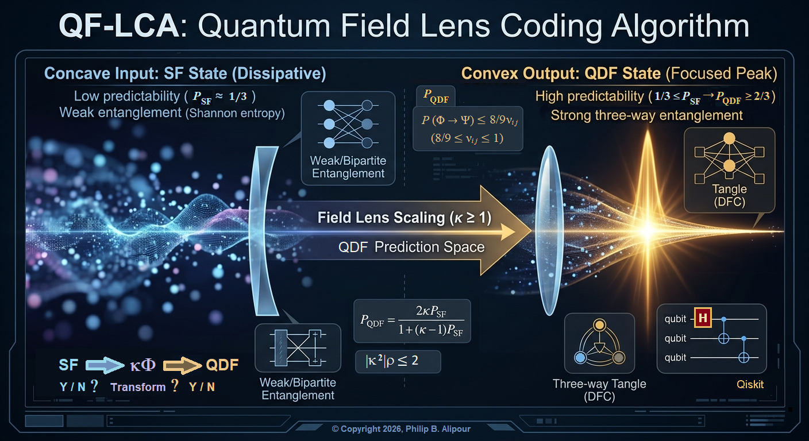

QF-LCA Interactive Gateway: Hover and click the title banner or either side of the vertical dotted field boundary to explore simulations and algorithms.

Simulation Runtime Notice: Certain interactive modules run native Python/PyScript quantum state engines directly in your browser. Please allow a brief initialization moment (typically 5–15 seconds on first load) for the computational kernel and parameter matrices to compile before interacting.